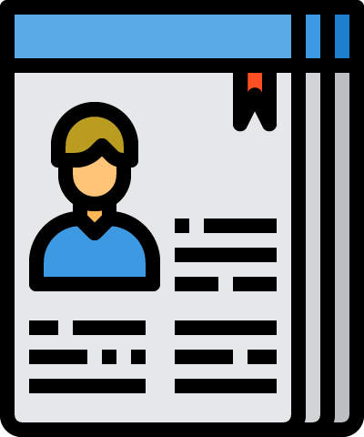

Hola!.
Soy Juan Hidalgo, diseñador de profesión y desarrollador web, actualmente me encuentro constantemente aprendiendo y obteniendo conocimientos de programación full-stack, así como para de desarrollo Front-End. Durante mi carrera he trabajado bastante en el área del diseño estratégico, así como también en diseño gráfico e industrial.

Aptitudes.
Diseño Integral
Estudié Diseño de la Pontificia Universidad Católica de Santiago de Chile. Personalmente me enfoqué y especialicé más en el área del diseño industrial, Branding y Web, que fue lo que llevó a que al terminar quisiera hacer una carrera en Programación y desarrollo web finalmente. Dentro de los criterios como diseñador, cuento con altos conocimientos de programas y herramientas de diseño como Adobe Illustrator, Photoshop, Indesign, Inventor, Design Sketching, CAD, 3D printing, Arduino, UX-UI design, entre otros.

Programación Full-Stack
He realizado bootcamps extensos de programacion Full-Stack en Ruby y el framework de Rails (Ruby on Rails). Esto llevó a una preparación tanto de programación Front-End y Back-End, servidores y programación de aplicaciones Web. Para el desarrollo de un sitio Web o aplicación web he utilizado ampliamente los lenguajes de HTML5, CSS, Javascript y Ruby, principalmente programación orientada a objetos, con sus respectivas bibliotecas.
*Si quieres saber más, te invito a ver mi CV (formato PDF) en el siguiente vínculo de la imagen:

Qué estoy buscando ahora
Actualmente busco desempeñarme como practicante de diseño y programación Full-Stack o Front-End.
Cualquier oferta y sugerencia no dudes en contactarme!